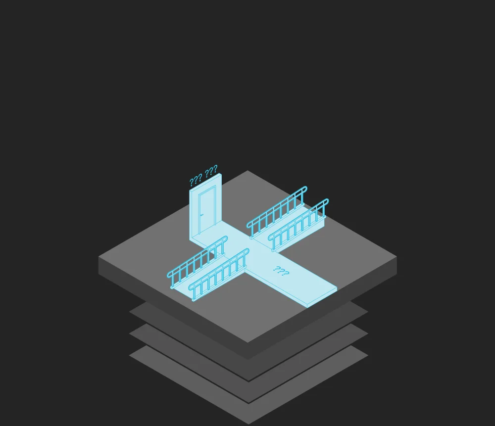

Fill in the missing words
Handrails shall be continuous except when intersected by an
or has an
leading to it.
Check
Check the answers. The responses will be marked as correct, incorrect, or unanswered.